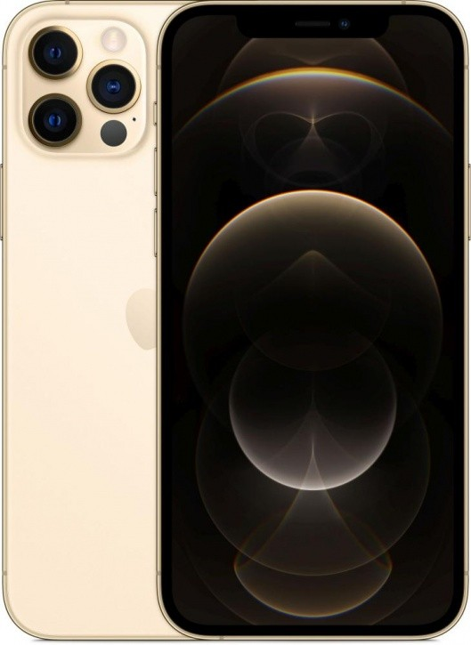

Это iPhone 12 Pro. A14 Bionic, самый быстрый процессор iPhone. Система камер Pro, которая обеспечивает потрясающее качество снимков при слабом освещении. Это новая прекрасная эра для iPhone.
Это iPhone 12 Pro. Великолепный яркий дисплей Super Retina XDR 6,1 дюйма. Передняя панель Ceramic Shield, с которой риск повреждений дисплея при падении в 4 раза ниже. Потрясающее качество снимков при слабом освещении благодаря новой системе камер Pro. Оптический зум с диапазоном 4x. Съёмка, монтаж и воспроизведение видео кинематографического качества в стандарте Dolby Vision. Ночной режим для портретов и дополненная реальность нового уровня благодаря сканеру LiDAR. Мощный процессор A14 Bionic. И новые аксессуары MagSafe, которые мгновенно примагничиваются и обеспечивают более быструю беспроводную зарядку. Это впечатляющие возможности.
В этом году Apple расщедрилась на новые «айфоны». Сначала был SE нового поколения, на днях начались продажи iPhone 12 и iPhone 12 Pro, а в ноябре появятся и iPhone 12 mini и iPhone 12 Pro Max. Сегодня у нас младшая «прошка», которая рискует стать наиболее востребованным в текущей линейке «яблочных» смартфонов. Он заметно отличается от предшественника, хотя однозначного совета менять iPhone 11 Pro мы бы не дали. Но обо всем по порядку.
Диагональ экрана: 6.1 "
Тип управления: сенсорное
Кол-во: SIM-карт 2
Формат SIM-карты: Nano-SIM, eSIM
Операционная система: iOS
Версия операционной системы iOS 14
Линейка iPhone 12 Pro (Apple)
Сертификация РСТ / СТБ / EAC
Разрешение экрана: 2532×1170
Технология экрана: OLED
Плотность пикселей: 460 ppi
Кол-во цветов: 16 миллионов
Сенсорный экран: емкостный, мультитач
Защита от царапин есть (Ceramic Shield)
Постоянная память: 128 Гб
Поддержка карт: памяти нет
Камера: есть
Разрешение камеры: 12 Мп
Диафрагма: ƒ/1.6
Дополнительный модуль камеры: есть, сверхширокоугольный, телеобъектив
Разрешение дополнительного модуля камеры: 12 Мп (x 2)
Диафрагма дополнительного модуля: ƒ/2.4 (сверхширокоугольный), ƒ/2.0 (телеобъектив)
Фокусировка: автоматическая
Встроенная вспышка: светодиодная
Стабилизация изображения: оптическая (двойная)
Оптический зум: 2×
Максимальное разрешение видео: 3840×2160 (UHD 4K)
Макс. частота кадров при видеосъемке: 60 fps
Тип аккумулятора: Li-ion
Зарядка от USB: есть
Процесс зарядки: быстрая зарядка, беспроводная зарядка, стандартная зарядка
Комплектация: кабель USB Type-C (Lightning), документация
Длина: 146.7 мм
Ширина: 71.5 мм
Толщина: 7.4 мм
Вес: 187 г